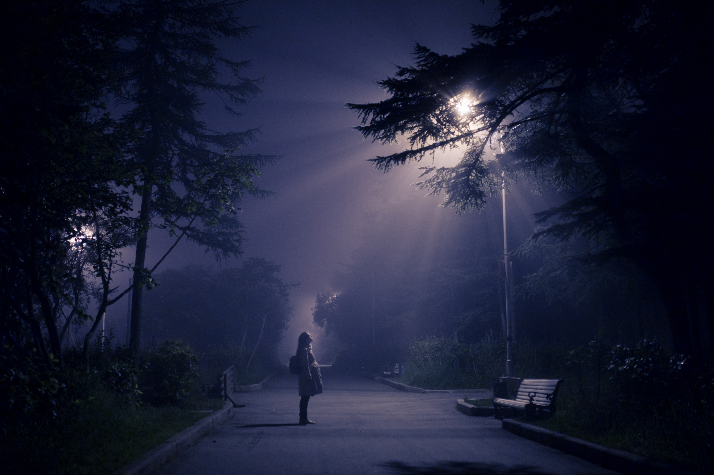

This Issue's Featured Story
Recalling a Sedona Trip
I.
The car smelt of the forest as Bob Seger played on the radio. Greatest hits seem diminished when you only hear the first half of the CD. Every time we turned off the car, my uncle would take out the CD put it away in the case hanging to the sun visor. Upon returning to the car he would put the CD back in the player and start it all over. So the same two songs over and over got old remarkably quick. My cousins and I sat in the back talking. They had recently come back from Chile and they spoke of the feared monster in those parts. The animal known as the Chupacabra was all they talked about.
I had never heard such a thing. I was fascinated and terrified. Knowing that feeling well by this point, I let questions bubble up and I want to know it all. They spoke of a creature feeding on livestock and sucking the victim dry. It was a small creature with lizard like skin and red eye. Quick and almost uncatchable, even the best stories only saw it for a few moments.
 In my imagination I saw myself hunting for the foul beast. Racing across the ice and snow on snowmobiles near Antarctica and flying in helicopters peering over jungle in the north. A montage of feats played in my mind like a broken record. Seeing its red eyes stare back as I finally caught him made me feel like a real life Indiana Jones. Haven even forgotten the girl I was talking to at the time or fact I was on vacation, the fantasy took over and it was all I could see. Soon I envisioned traveling to Sedona just as we were already doing. But this time I had caught the beast. I was the great adventurer capable and strong. Everyone knew my name and I was praised for my heroics.
In my imagination I saw myself hunting for the foul beast. Racing across the ice and snow on snowmobiles near Antarctica and flying in helicopters peering over jungle in the north. A montage of feats played in my mind like a broken record. Seeing its red eyes stare back as I finally caught him made me feel like a real life Indiana Jones. Haven even forgotten the girl I was talking to at the time or fact I was on vacation, the fantasy took over and it was all I could see. Soon I envisioned traveling to Sedona just as we were already doing. But this time I had caught the beast. I was the great adventurer capable and strong. Everyone knew my name and I was praised for my heroics.
It’s easy to see why there is so much hype in this line of work. Maybe we don’t want to find the creatures as much as we want the fame. To have something for nothing. But it occurred to my young mind that the pleasure is actually in the hunt, not in catching the beast. Not in defying ourselves through our accomplishments but through our goals.
The car pulled up to a gas station, my uncle followed through on his habit. Taking out the CD, putting it in the CD holder on the sun visor.
II.
On the next leg of our journey my uncle followed through once more. Inserting his CD back into the player and Seger was serenading once again. My mind was still stimulated by the previous conversation when my phone vibrated in my pocket. At sixteen, you’d think all that would be on my mind was chasing girls, but I completely forgot about the girl texting me. My entrancement was so complete.
A few moments and a song or two later my younger cousin asked what we knew about Sedona. “It’s haunted.” My older cousin said.
“Nah.” My brother replied. “I heard that there are cultists there. They meet in black robes and sing songs in Latin. Placing hexes are kind of their go to.”
The truth was I didn’t know what the big deal of Sedona was. No idea what so ever. I thought it was all about the red rocks and beating the heat for a couple of days.

“What else do the cultists do?” My younger cousin asked.
My brother took a moment. Deep in thought he sat in silence. Then finally he said, “they call aliens from what I hear.”
Spiraling thoughts swarmed my mind, visions of the black robes around a campfire. The cold forest air breeding through the trees, with only the gentle feeling and slight whistle giving any indication. Their faces darkened out by shadow and their hands reaching to out to the sky. The ritual master says something foreign and the group begins chanting. Incense fills the air and is smelt for miles.
To my surprise my uncle changed the station. Lite jazz filled the car as we drove through the night. We all looked up and wondered if we were finally at Sedona but to our dismay we were still miles away.
III.

I texted back my female friend. Apparently there was a rumor at work that a couple more women were interested in me. Normally this would be quite exciting, and I guess on a superficial level it was. But I was more interested in what we were talking about before. After a while I had assumed that we were done talking about it until my younger cousin asked once more. “So these robed cultists call aliens?”
“That’s what I heard.” My brother said. “They call to them in their Latin chants, their old prayers that have some words changed. By changing the words they can call to these aliens. See they’re not like the little gray men, they’re more like spirits. They don’t even need to travel in ships. They just fly from one planet to the next. And they’re massive, we wouldn't really see them but the cultists would. That’s part of the ceremony. ”
From the look of my younger cousin’s face, I wasn’t the only one interested in this topic. We dove deeper into the rumors that we had heard in AZ I found it both exciting and laughable. How could so many theories emanate from one place? Eventually the conversation faded and my younger cousin was beginning to nod off. Silence gently fell on the car and I stared out the window. With a blanket of stars staring back I couldn’t help but imagine what mysteries awaited me. That first night we almost went to bed upon arrival, thus forfeiting the time reminding. Like a kid on Christmas Eve I tried to force myself asleep.
IV.
Every night I looked into the sky. Hoping to see that one star that would suddenly grow and then some optical illusion would flicker and a UFO would appear. Every night I would be disappointed. We explored the town and saw the famous chapel built into the rock. Ate at the nice restaurants and shopped at all the fancy stores. I talked to the pretty girls and bought a couple books. It actually was a nice time, but I still left with disappointment. Because I expected something to happen that didn’t. For the next few month I would doubt many of the things I was told, not only in the back of the car, but on the sides of streets and in every store in Sedona. Everyone had a story. A theory. An explanation for why so many of the things are the way that they are.
On my last day I met an older Native American woman, she was striking and wise. She carried that wisdom in her demeanor and you could find yourself captivated by her every word. “Our hopes, our theories,” she told me, “help us make sense of the world. It doesn’t even matter if they are true.”
I thought for a moment but by the time an answer came to me she was gone. I walked out of the store to find that she had left sight unseen. My older cousin came outside of the store to tell me it was time to go. “Our theories help us make sense of the world.” I told myself. Perhaps there was something magical about Sedona and I didn’t see it on that trip. Maybe there was nothing at all.
Extra Stories
In the Sleepy Town of Enfield...
Background
In the late 1970’s one of the most documented cases in paranormal activity took place, a sleepy section of London known as Enfield. A single mother and her children were driven out of their home one night as a strange disturbances began to unfold. In their fleeing, they went to a neighbor’s home. One of them, a large man that worked in construction, went back to the house to see for himself. Coming back, he too became terrified. What they were witnessing was furniture moving and loud banging, and to a degree they couldn’t understand. It was at that time the police was notified. Two officers came and took reports from the family and the neighbors. In these reports are also moments witnessed by the two officers on the scene. These events would go on to bring a group of experienced individuals on both sides of the investigative industries.

After the police reported what they had seen, it was not long before the local news media would catch wind of it. Although photographers were sent to the scene, they were unable to take any photos at that time, but they would report similar activity. Investigator Maurice Grosse would soon come to look into the matters, and people with the BBC. From 1977 to 1979, a timeframe lasting eighteen months in total, documentation of many kinds was created including a number of audiotape interviews and pictures. Skeptics then and now still hold that the evidence was easily faked, and that the majority of evidence is eye-witnesses. The unreliability, however, is still debated as even some of the researchers admit that some childish pranks did occur, much of the activity could not be faked. Field Note: This story is mostly known now for being the premise of the second ‘Conjuring’ film, but according to some accounts, they at most stopped by and rendered an opinion, unlike what the movie would suggest.
Some More Information
This case is referred to as a poltergeist by paranormal investigators. This is different from a haunting in that a haunting is said to have a more perpetual basis, where a poltergeist can last as short as a few days. While this may be the most famous example of such an event, it isn’t unknown to paranormal investigators. The most famous example, although fictional, is the film by the same name. But not all of these are cause by building something on sacred land, but rather are created by a wide range of factors. Some paranormal experts even suggest that a poltergeist is in some cases merely the coalescing of negative energies and result in psychic phenomenon. Other times it can be derived from negative energies in the environment, or even from people, and it isn’t uncommon for this to happen around adolescence.
A group of skeptics point to the art of magic, or the art of illusion. In the same way that magicians can manipulate objects beyond our senses, it is said that hoaxes similar to something like this can be explained through this porthole. Magic entertainers have utilized many types of ploys to accomplish numerous types of tricks, and even the idea of furniture moving wasn’t wholly new in terms of magic tricks. Harry Houdini and Dave Copperfield were already famous by this time, so some of these ideas could have been inspired by outside sources. Even levitation as a magic trick dates back to the mid-19th century. Milbourne Christopher was also supposed to have investigated the Enfield event. Field Note: David Copperfield is on a number of programs explain what older magicians inspired him, and even explains how some of the tricks evolved over time in some of the programs.
Some Theories
Many of the people closely observing the events as they unfolded have maintained their stories and have seemingly refused the idea of a hoax. Despite being made up of mostly eye-witness accounts the case has maintained both its notoriety and appeal. But it also remains among the most widely observed and documented cases of its kind. There of course are also a number of believers that suggest a sort of middle ground where much of the paranormal activity was genuine and yet a number of a small number of incidents were pranks by the children. One important detail that believers point to is an interview caught on tape. At one point the raspy voice coming from one of the young girls states that its name was Bill and died in a chair located in one of the rooms downstairs, which is where the previous tenant named Bill was found dead. On top of this admission, the voice also named the precise cause of death for this ‘Bill’.
However, some of the evidence can lend itself to the idea that it was entirely a hoax. A number of scientific bodies have reviewed the findings over the years and concluded the children and possibly the mother concocted the entire event. Even the voice on tape is argued by some to not be anything more than the young girl faking a voice. A number of pictures do in fact look like the girls could be jumping around when there were claims of levitation. The eye-witness testimony has also been largely deemed untrustworthy. In psychology, there is conclusive evidence to support these claims. Field Note: In terms of eye-witness testimony, it is possible to get details wrong, but often in law enforcement it is still sometimes used. One police officer in Netflix documentary about the Son of Sam killings mentions that eye-witnesses are only wrong up to a point, as it’s not likely to mistake a blonde person for someone that has black hair, or a person above 6’2’’ to be called short.